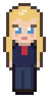
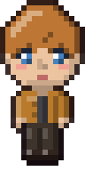
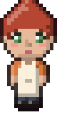
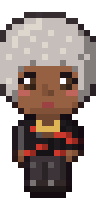

Personagens
National City tem 20 pessoas para conhecer. Conversar uma vez por período (manhã, tarde e noite) e dar presentes enche os corações. Cada coração vale 250 pontos. Só a Lucy e a Vittoria passam de 8 corações, e só namorando.
Luthor Corp
Samantha AriasCFOAniversário: 13 de OutonoQuerl DoxCTOAniversário: 3 de InvernoJessAssistente executivaAniversário: 9 de PrimaveraIanDiretor da Marina LuthorAniversário: 3 de Verão
CatCo

Lucy WilliamsRepórter da CatCoAniversário: 4 de Primaveraromance Nia NalRepórter da CatCoAniversário: 5 de VerãoBarry AllenFotógrafo da CatCoAniversário: 2 de Outono
Nia NalRepórter da CatCoAniversário: 5 de VerãoBarry AllenFotógrafo da CatCoAniversário: 2 de OutonoMoradores
 Vittoria RicciDona do Gruppo RicciAniversário: 11 de Verãoromance
Vittoria RicciDona do Gruppo RicciAniversário: 11 de Verãoromance
HarryBarista do Grão NobreAniversário: 4 de Outono TheoLivreiro da Bayside BooksAniversário: 9 de Verão
TheoLivreiro da Bayside BooksAniversário: 9 de Verão
BeaDona do Mercado CentralAniversário: 14 de Primavera
Dona GraçaChef da Ricci TrattoriaAniversário: 10 de OutonoMarcoBarman do Noonan'sAniversário: 6 de Inverno Seu JocaPescador do píerAniversário: 12 de Primavera
Seu JocaPescador do píerAniversário: 12 de Primavera Celeste WaiteEstilista da La BoutiqueAniversário: 6 de Primavera
Celeste WaiteEstilista da La BoutiqueAniversário: 6 de PrimaveraConti Moretti
Dra. Cristina YangDireção Médica · Conti MorettiAniversário: 12 de InvernoDra. Meredith GreyDireção Médica · Conti MorettiAniversário: 2 de PrimaveraDra. Milany MorettiCentro Cardiovascular · Conti MorettiAniversário: 8 de OutonoDra. Izzie StevensCentro de Oncologia · Conti MorettiAniversário: 13 de Verão Dra. Addison MontgomeryCentro Materno-Infantil · Conti MorettiAniversário: 8 de Inverno
Dra. Addison MontgomeryCentro Materno-Infantil · Conti MorettiAniversário: 8 de Inverno
Dra. Addison MontgomeryCentro Materno-Infantil · Conti MorettiAniversário: 8 de Inverno Andrea Rojas
Andrea Rojas